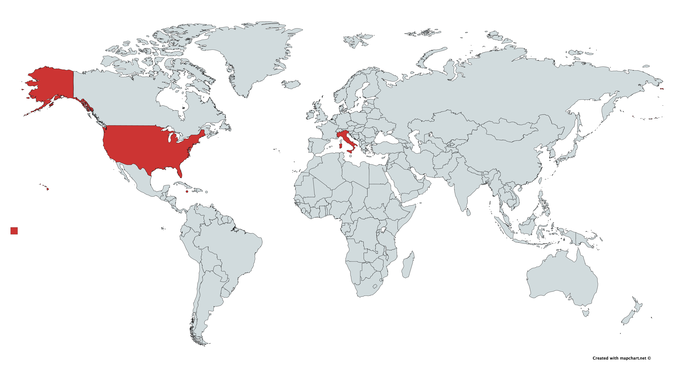

Welcome to Satchin's Weekly Recipes!
What is this?
Let me take you on a culinary journey of global proportions,
if you can't travel around the world, why not do the next best thing?
Let your tastebuds do the traveling

My favourite foods
- Grandma's Lemon Meringue Pie
- Curry Goat & Rice & Peas
- Deep Dish Meat Pizza
- Fried Chicken
Glossary
- Pie(not to be confused with Pi)
- A pie is a baked dish which is
usually made of a pastry dough casing that covers
or completely contains a filling of various sweet or savoury ingredients
-
- Oxtail
- The tail of cattle
- Agnolotti
- Agnolotti is a type of pasta typical of the Piedmont
region of Italy, made with small pieces of flattened pasta dough, folded
over a filling of roasted meat or vegetables.
Recipe Release Schedule